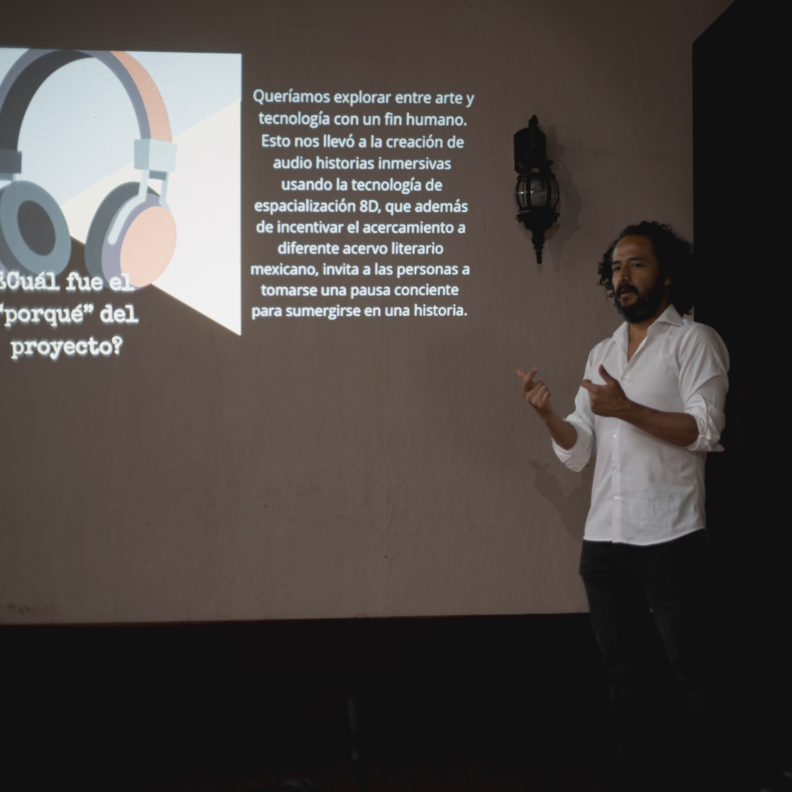
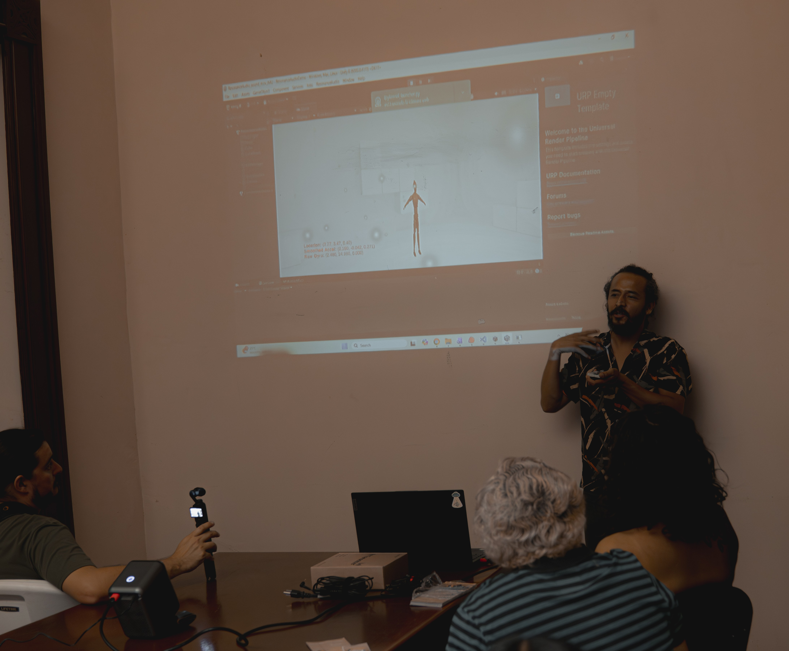

Súmérgete en el cuento
Interactive 8D (ambisonic) audio production driven by movement and perception
An immersive audio experience where sound responds dynamically to movement during post-production. Using spatial audio techniques and real-time input, the system creates a narrative environment that evolves through interaction.
Status: finished
Motive
Traditional listening experiences are static and linear. This project explores how narrative and sound can become interactive, allowing post-production tools through movement and position, beyond a simple mouse and keyboard, achieving thus a more natural spacialization capture.
The goal is to create a sense of immersion where perception is shaped not only by sound design, but by the relationship between the body, space, and story.
System
The system combines motion tracking and spatial audio processing to dynamically modify sound in real time durion post-production.
- Unity-based environment for audio and interaction
- IMU sensors for head tracking
- Computer vision for positional input
- 8D / spatial audio processing: Google Resonance Audio
- Real-time mapping between movement and spacialization
Output
The result is a set of interactive audio pieces stories designed to be experienced through headphones, each exploring different spatial and narrative dynamics.
Media

